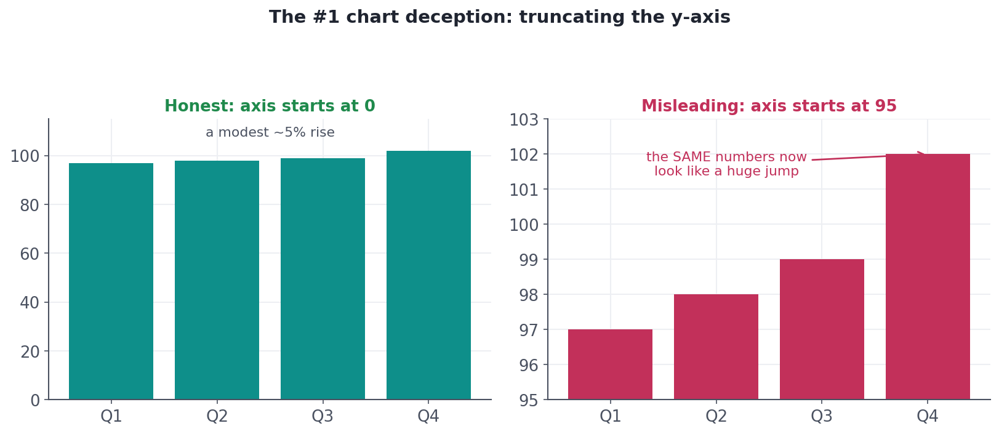
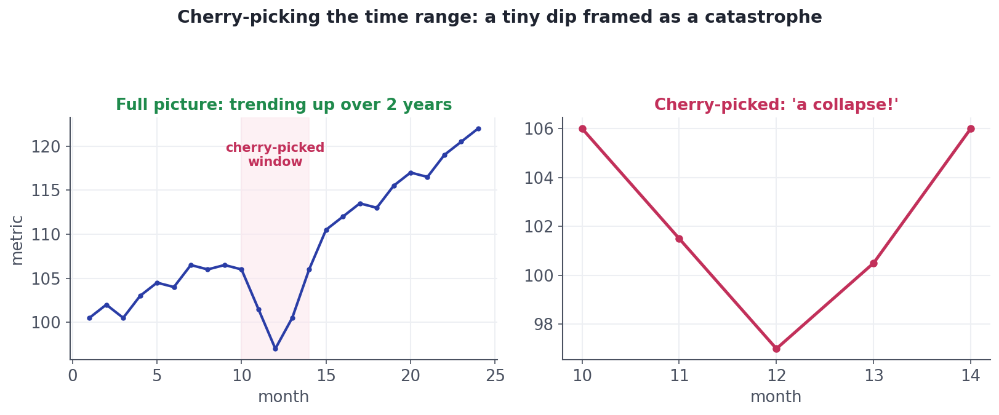

Telling the Truth With Charts
Truncated axes, cherry-picked ranges, and the other ways charts mislead — and how to stay honest.
A chart can be 100% accurate and still lie. The same true numbers, framed differently, can whisper 'no change' or scream 'catastrophe.' As the person holding the data you have a duty to show it honestly — and just as importantly, to spot when a chart (yours or someone else's) is misleading. This lesson is the integrity half of visualization: the common deceptions and how to avoid them.
Deception #1Start bars at zero
The most common chart deception is truncating the y-axis — starting it somewhere above zero. For a bar chart this is especially dishonest, because a bar's length is supposed to represent the value; cut off the bottom and you destroy that correspondence, magnifying tiny differences into huge ones.

Deception #2Show the whole context
The second classic trick is cherry-picking the range: zooming into the slice of time (or the subset of data) that tells the story you want, and hiding the rest. A blip becomes a 'collapse'; a pause becomes a 'boom.'

ConceptOther traps to avoid (and to catch)
A handful of other ways charts mislead — worth knowing so you neither commit them nor fall for them:
- Dual y-axes: plotting two series on two different scales can manufacture a 'correlation' that's just a choice of axes. Use with great caution.
- Area and 3-D distortion: making a value 'twice as big' by doubling an icon's width actually quadruples its area; 3-D pies and bars warp the very lengths we rely on.
- Bad color and ordering: rainbow scales imply false categories, and unsorted bars hide the ranking.
- Chartjunk: gridlines, gradients, and decorations that add ink but no information, distracting from the data.
Worked exampleThe numbers behind the deception
Putting a real number on the truncated-axis chart shows just how large the distortion is — and gives you the honest figure to report instead.
vals = [97, 98, 99, 102] # the four quarterly numbers from the chart
change = (vals[-1] - vals[0]) / vals[0]
print(f"Q1 = {vals[0]} Q4 = {vals[-1]}")
print(f"actual change Q1 -> Q4 = {change:.1%}")
print("Truncating the axis at 95 makes the Q4 bar look several times taller than Q1,")
print("but the real rise is only about 5%. Same data; the framing is what lies.")Q1 = 97 Q4 = 102 actual change Q1 -> Q4 = 5.2% Truncating the axis at 95 makes the Q4 bar look several times taller than Q1, but the real rise is only about 5%. Same data; the framing is what lies.
The fix is a habit, not a rule-book: bars start at zero; show enough context that the reader can't be fooled by the frame; label axes and units; sort when there's no natural order; and let the data, not decoration, carry the message. When in doubt, ask a colleague 'what does this chart make you believe?' and check it matches the truth.
★ Key points to remember
- Bar charts must start the value axis at zero — truncating it exaggerates small differences (the #1 deception).
- Show the full context; cherry-picking a time window or subset can turn a blip into a 'crash.'
- Beware dual axes, area/3-D distortion, misleading color/order, and chartjunk.
- Label axes and units; sort categories without a natural order.
- You have a duty to show data honestly — and to spot when a chart is framed to deceive.
◆ Practice▸
Show solution & reasoning
Decline, and explain why: truncating a bar chart's axis breaks the length-to-value mapping and visually inflates a 2% change into something it isn't — that's misleading, and it destroys trust when noticed. Offer honest alternatives that still communicate the win: start at zero but annotate the +2% directly, show the trend over time as an honest line, or report the change as a clearly labeled number alongside. Persuasive and honest is always possible.
Show solution & reasoning
(1) Does the value axis start at zero? — essential for bars. (2) What's outside the frame? — is the time range or subset cherry-picked? (3) Are axes and units labeled, and is the encoding faithful? — no dual-axis tricks, no area/3-D distortion, sorted bars, minimal chartjunk. A fourth good one: 'what does this chart make me believe, and is that actually true?'
◎ Deep dive: data-ink, the lie factor, and the zero-baseline nuance▸
Data-ink and the integrity ratio. Edward Tufte argued for maximizing the data-ink ratio — the share of a chart's ink that actually represents data — by erasing non-data decoration (heavy gridlines, backgrounds, 3-D effects, redundant labels). Less chartjunk means the data carries the message. He also defined the lie factor: the size of an effect shown in the graphic divided by its size in the data. An honest chart has a lie factor of 1; a truncated-axis bar chart can push it to 5 or more.
The zero-baseline nuance. The 'always start at zero' rule is really 'don't let the baseline distort the encoding.' For bars, whose length is the value, zero is mandatory. For line charts, which encode change via slope, a non-zero, focused range is often the honest choice — forcing a stock price or body-temperature chart to include zero would hide the very variation that matters. The test is intent and faithfulness: are you revealing the data, or manufacturing a story the numbers don't support?
Ethics is practical, not just moral. Misleading charts aren't only wrong; they're fragile. The moment a smart stakeholder spots a truncated axis or a cherry-picked window, they stop trusting not just the chart but you and your whole analysis. Honest visualization is how a data scientist builds the credibility that makes their recommendations actually move decisions (the entire point of Track 12).
A common exercise is "critique this chart." Lead with the big two — is the bar axis truncated, and is the range cherry-picked? — then check labels, encoding faithfulness (no dual-axis or 3-D tricks), sorting, and chartjunk. Naming the lie factor or data-ink ratio signals you think about visualization integrity, not just aesthetics.